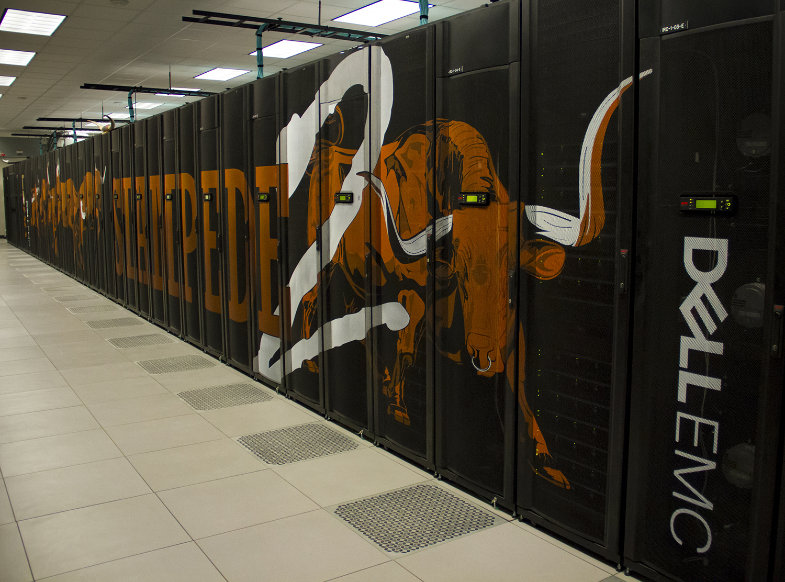

Chapter 3 Computing for Cancer Research
To afford you the best opportunity to perform the informatics research that you would like, it is useful to become familiar with computing options and costs. This course aims to provide research leaders with some guidance about making decisions for computing hardware and software. It will also describe the benefits and drawbacks of local and “Cloud” computing, as well as the associated costs of each.
3.1 Choosing a Computing Platform
In order to accomplish computational work, you will require a computing platform. A computing platform, is all the hardware (the physical parts of your computing platform) and software (the code that tells the computing platform how to function) necessary to create the environment in which you can perform your computational work.
Finding the “right” computing platform depends on many different considerations.

3.1.1 Important questions
Asking yourself and your research team these questions can help you find the right computing platform:
- Do I need a graphical interface, a command line interface, or both?
What do we mean by this?
A graphical interface or graphical user interface or GUI, allows for users to choose functions to perform by interacting with visual representations. They have a “user-centered” design that creates a visual environment where users can for example click on tabs, boxes, or icons for to perform functions.
Galaxy offers a graphical interface for performing analyses and tasks. For example in the following image we show a graphical interface for joining two files:

A command line interface (also known as a character interface) allows for software functions to be performed by specifying through commands written in text. This typically offers more control than a graphical interface, however command line interfaces are often less user friendly as they require that the user know the correct commands to use.
For example, one could perform functions in R using Bioconductor packages such as Biostrings with a command line interface:

A situation where you might use both a command line interface and a graphical interface, is using RStudio to perform an analysis in R with Bioconductor packages. RStudio is what is called an IDE or an integrated development enviornment, which is an application that supports writing code. There are many tools to help you including a console for writing code in R with command line interfacing, as well as graphical interface tools to for example save a plot as is shown in the image below.
 2) Am I working with protected data that requires special security precautions?
2) Am I working with protected data that requires special security precautions?
If you are working with data that might be protected by HIPAA, such as electronic health records, then special security measures are required to ensure that only authorized users have access to the data.
 [source]
[source]
- How computationally intensive are my tasks?
If you have a large amount of data and/or are performing complex analyses, you may require more computational power than your current laptop.

- How much storage space do I need for both temporary and long term data?

If you are working with large datasets you may also need storage options that go beyond what you currently have available. Local or “Cloud” storage options may work for you, depending on other considerations (security, data transfers) that we will discuss further.
3.2 Choosing Hardware
Choosing a computing platform involves both software and hardware decisions. With regards to hardware, two common options include:
- Personal computers - whether it be a laptop, a desktop, or a local server.

In this case in terms of hardware, the term server means a computer that can be accessed through a direct network or the internet to perform computations or store data. Read here to learn more. For example, you could purchase a more powerful computer to act as a server for your lab. Your lab members could connect to this server from their own computers to allow each of them more computational power. Typically computers that act as servers are set up a bit differently than our personal computers, as they do not need the same functionality- for instance they often don’t have capabilities to support a graphical interface. They are designed to optimize data storage and computational power.

- Shared computers - whether it be an institutional HPC cluster(which stands for High Performance Computing) or a national resource like Xsede.

Your university or institution may have a HPC cluster, this means that they have a group of computers acting like servers that people can use to store data or assist with intensive computations. Often institutions can support the cost of many computers within an HPC cluster, allowing for what is called parallel computing. This means that multiple computers will simultaneously perform different parts of the computing required for a given task, thus significantly speeding up the process compared to you trying to perform the task on just your computer! This is also a much more cost effective option than having one expensive supercomputer (a computer that individually has the computational power of many personal computers) to act as a server. It turns out that buying several less powerful computers is cheaper.
Alternatively, you could consider an option like Xsede. Xsede is led by the University of Illinois National Center for Supercomputing Applications (NCSA) and includes 18 other partnering institutions (which are mostly other universities). Through this partnership, they currently support 16 supercomputers. Universities and non-profit researchers in the United States can request access to their computational and data storage resources.
Here you can see a photo of Stampede2, one of the supercomputers that members of Xsede can utilize.

[source]
Stampede2, generously funded by the National Science Foundation (NSF) through award ACI-1134872, is one of the Texas Advanced Computing Center (TACC), University of Texas at Austin’s flagship supercomputers.
See here for more information about how you could possibly connect to and utilize Stampede2.
Importantly when you use resources like Stampede2 available through Xsede, as well as institutional HPC clusters, you will share these resources with many other people and so you need to learn the proper etiquette for using and sharing these resources. These will vary by the shared resource, however in general:
- Dont use all CPUs on a node if you don’t need to
- Dont use all RAM on a node if you don’t need to
- Communicate with others if you will be submitting a large or intensive job
(We will describe more about CPUs and RAM later- so don’t worry if that is new information for you.)
- Cloud Computing - More recently, commercial “Cloud” solutions are becoming a more viable hardware solution, offered by companies like Amazon, Google, and Microsoft. This is technically also a shared computer situation. Somewhere these companies have clusters of computers that paying customers use through the internet.
Choosing a platform remains a considerable commitment with regards to the time required for training and setup. So how do you know whether the “Cloud” is right for you?

While no single factor is usually sufficient to make this decision, important considerations include:
Avocado - I want to modify this to highlight the difference between cloud computing by companies vs Xsede
- Are my local resources sufficient?
When a local solution already works, one may rightly question the time required to migrate to the Cloud. However, when local solutions are insufficient or unsustainable, then the Cloud becomes a competitive option.
- Am I working with especially big or controlled access datasets?
Increasingly large datasets like the NCBI Sequence Read Archive are being stored on the Cloud. If your work relies on being able to access the entire dataset, then the Cloud may be your only practical option. Furthermore, if you work with controlled access data, then more platforms are providing compliance with regulations like HIPPA and FedRAMP.
- Do I need to work with collaborators? Computational research increasingly involves larger and larger collaborations. While many fragmented systems exist to share work, the Cloud presents an opportunity for everyone to share the exact same computational environment covering hardware, software, and datasets.
If Cloud Computing makes sense for you, then you’re in luck! The past decade has seen the development of many efforts to make Cloud computing, easier, faster, and more affordable. As each platform has their strengths and weaknesses, we will now discuss several opportunities and challenges that Cloud computing presents in the field of computational genomics.
3.2.1 Benefits of Cloud Computing
The state of Cloud computing is continually evolving. Here, we highlight three main current opportunities:
- Sharing Workflows
The first opportunity is the increasing ease with which one can share and collaborate on research projects. Shown here is the History feature of Galaxy whereby one can share not only datasets but also every computational manipulation that was performed.

By sharing such a History, one can reproduce an analysis in its entirety, allowing collaborators to offer comments and extend upon the work.
- Sharing Workflows between Platforms
While sharing complete analysis histories is for the most part constrained to a particular software platform, a second opportunity that has arisen is the ability to share Workflows between platforms.
Shown here is a diagram of a single cell analysis pipeline published by the Klarman Cell Observatory on Dockstore:

This higher level abstraction coupled with container technology allows this multistep analysis to be run with relative ease on supporting platforms like Terra and DNAnexus.
- Using Commondity Hardware
The third opportunity we highlight is the increasing ease by which one can provision commodity hardware at scale.

What this means is that you can pay reasonable costs to complete your analysis in less time by renting hundreds to tens of thousands of Cloud-based computers – importantly stopping the bill when your analysis is complete. Specialized hardware like GPUs and large memory nodes are also available for rent allowing you to pay only for what you need.
3.2.2 Challenges of Cloud Computing
Balancing these three opportunities are four challenges:
- Data Transfer
Data transfer and data management remains a cumbersome task. While storing data in the Cloud has its advantages, many people are still not willing to be for the corresponding storage costs. Thus, careful planning is necessary with regards to what data will be stored where, as well as budgeting the time necessary to transfer data back and forth.
- Data Security
A discussion of data in the Cloud would not be complete without commenting on security compliance. Most Cloud resources offer features that make it easier to access and share data, and these features often come at the expense of security. Thus, special precautions must be implemented to securely store protected datasets such as human genome sequences and electronic health records.
- Costs
Controlling costs, especially with regards to storage, presents a third formidable challenge. As many Cloud providers naturally want to encourage usage of their platforms, users must be aware of how much money is currently being spent and be able to project how much money is likely to be spent in the future. We will briefly overview cost controls in the next section.
While software platforms can help mitigate these challenges, Cloud computing still incurs costs from the underlying hardware providers.
- IT
A final challenge is that many IT support staff do not have extensive experience managing Cloud resources. Should IT choose to support analysis on the Cloud, they would face the aforementioned challenges of understanding and supporting data management, security compliance, and cost management. Fortunately, large initiatives like AnVIL, Galaxy, and CyVerse continue to work on democratizing access to Cloud computing by tackling many of these challenges.